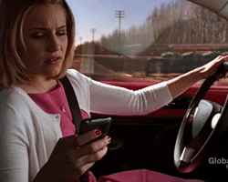

PROBLEMA
Davide Vitiello
Il telefono è diventato ormai lo strumento che più usiamo nelle nostre giornate,
sfortunatamente anche i momenti nel quale non dovemmo.

Come per esempio durante la guida, provoca distrazione e aumenta il rischio di incidente,
e poi, cosa ci sarà di tanto importante da fare al telefono durante la guida?